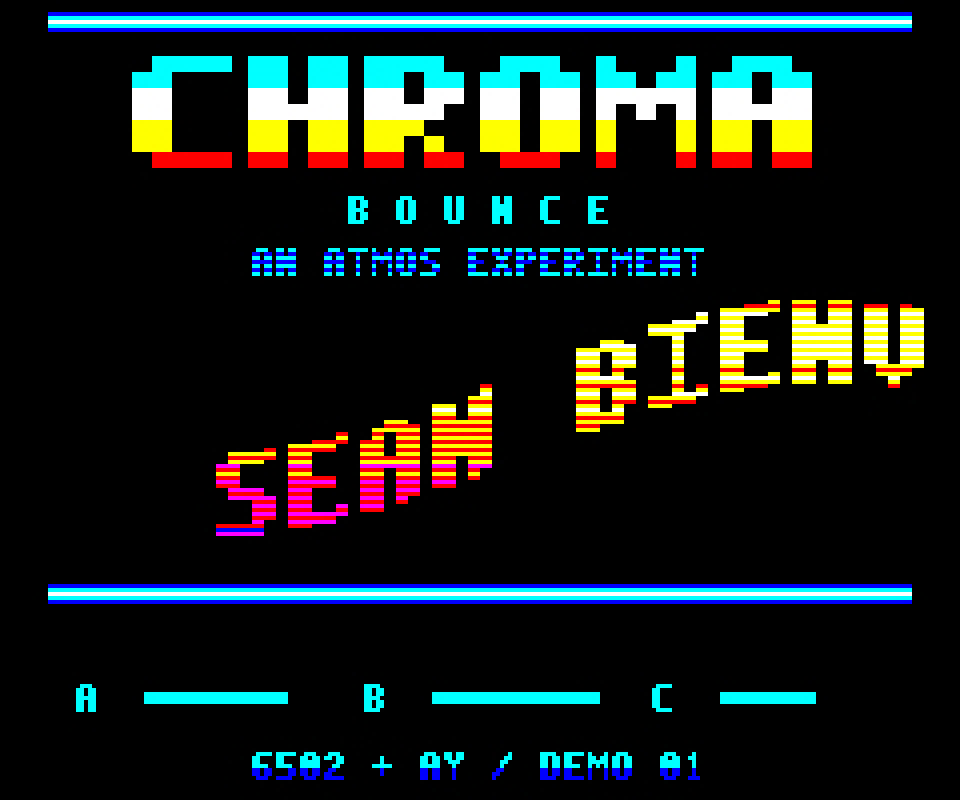

TWO MACHINES. ONE SUNSET.
CHROMA BOUNCE.
Big letters. Bouncy waves. Color by the scanline.
An original AY soundtrack, on two very different machines.

Live emulation · sound on
READY TO RUN
ORIC ATMOS · 48K · PAL
The original Atmos experiment.
A native 6502 demo with a 228-pixel scroller, alternating sunset inks and a three-voice AY soundtrack. Built for the Atmos, with a bootable Cumana Reborn disk.
Running in Phosphoric · complete Oric CPU, ULA, VIA and AY emulation
Prefer a recording? Watch the native capture.
Recorded from the native demo running in a full-machine emulator.